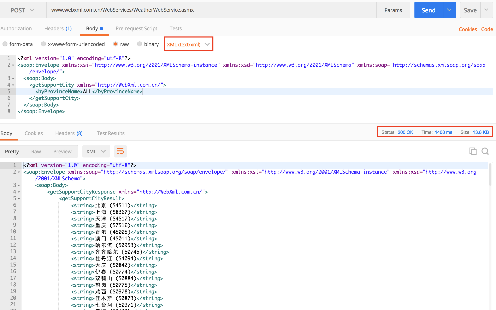

<!DOCTYPE html>


<html lang="en" >


<head>
  <meta charset="utf-8" />
   
  <meta name="keywords" content="postman使用," />
   
  <meta name="viewport" content="width=device-width, initial-scale=1, maximum-scale=1" />
  <title>
    Postman進階 |  臨淵羡魚
  </title>
  <meta name="generator" content="hexo-theme-yilia-plus">
  
  <link rel="shortcut icon" href="/favicon.ico" />
  
  
<link rel="stylesheet" href="/dist/main.css">

  
<link rel="stylesheet" href="/css/custom.css">

  
  <script src="https://cdn.jsdelivr.net/npm/pace-js@1.0.2/pace.min.js"></script>
  
  

<script type="text/javascript">
(function(i,s,o,g,r,a,m){i['GoogleAnalyticsObject']=r;i[r]=i[r]||function(){
(i[r].q=i[r].q||[]).push(arguments)},i[r].l=1*new Date();a=s.createElement(o),
m=s.getElementsByTagName(o)[0];a.async=1;a.src=g;m.parentNode.insertBefore(a,m)
})(window,document,'script','//www.google-analytics.com/analytics.js','ga');

ga('create', 'UA-163585158-1', 'auto');
ga('send', 'pageview');

</script>


  

<link rel="alternate" href="/atom.xml" title="臨淵羡魚" type="application/atom+xml">
</head>

</html>

<body>
  <div id="app">
    <main class="content on">
      <section class="outer">
  <article id="post-Postman進階" class="article article-type-post" itemscope
  itemprop="blogPost" data-scroll-reveal>

  <div class="article-inner">
    
    <header class="article-header">
       
<h1 class="article-title sea-center" style="border-left:0" itemprop="name">
  Postman進階
</h1>
 

    </header>
    

    
    <div class="article-meta">
      <a href="/2017/10/22/Postman%E9%80%B2%E9%9A%8E/" class="article-date">
  <time datetime="2017-10-21T18:43:53.000Z" itemprop="datePublished">2017-10-22</time>
</a>
      
      
      
<div class="word_count">
    <span class="post-time">
        <span class="post-meta-item-icon">
            <i class="ri-quill-pen-line"></i>
            <span class="post-meta-item-text"> Word count:</span>
            <span class="post-count">886</span>
        </span>
    </span>

    <span class="post-time">
        &nbsp; | &nbsp;
        <span class="post-meta-item-icon">
            <i class="ri-book-open-line"></i>
            <span class="post-meta-item-text"> Reading time≈</span>
            <span class="post-count">3 min</span>
        </span>
    </span>
</div>

      
    </div>
    

    
    
    <div class="tocbot"></div>


    

    
    <div class="article-entry" itemprop="articleBody">
      
      

      
      <blockquote>
<p>這篇文章預想是給入門一陣子<br>但是有菜味（稍去土味？）<br>而且時常搞不清楚前輩為什麼這麼懂接口<br>而自己卻搞不清楚自己的API究竟丟了什麼鬼出來<br>的菜菜–<strong>我</strong>  </p>
<blockquote>
<p>煩請高手指正, 熟悉使用Postman請大力鞭策  </p>
</blockquote>
</blockquote>
<a id="more"></a>
<h2 id="簡介"><a href="#簡介" class="headerlink" title="簡介"></a>簡介</h2><p>有鑒於我在網路上搜索了將近一個工作天的資料<br>中文的<strong><em>Postman</em></strong>介紹大多只有貼上Url然後Send然後結束<br>中文的使用資料有限</p>
<h4 id="身為一個有信仰的工程師絕不能單單如此"><a href="#身為一個有信仰的工程師絕不能單單如此" class="headerlink" title="身為一個有信仰的工程師絕不能單單如此"></a>身為一個<strong><em>有信仰的工程師</em></strong>絕不能單單如此</h4><p>現在的系統開發模式開始走向微開發，以模組化的方式呼叫不同接口，以達到重複使用的想法（也包含降低伺服器負擔 和 分散系統的耦合度 的想法）熟悉接口的開發和測試是必要技能。</p>
<h3 id="下面將從以幾點做測試"><a href="#下面將從以幾點做測試" class="headerlink" title="下面將從以幾點做測試"></a>下面將從以幾點做測試</h3><ol>
<li><strong>透過postman對api &amp; web service 發出請求測試</strong></li>
<li><strong>Postman 測試操作 ＆ Postman 請求發出前的預設參數</strong></li>
</ol>
<h2 id="測試"><a href="#測試" class="headerlink" title="測試"></a>測試</h2><h3 id="起源-在某份工作時-在做app接口的我問前輩："><a href="#起源-在某份工作時-在做app接口的我問前輩：" class="headerlink" title="起源 - 在某份工作時, 在做app接口的我問前輩："></a>起源 - 在某份工作時, 在做app接口的我問前輩：</h3><blockquote>
<p>&#8194;&#8194;&#8194;&#8194;：postman 這麼屌 能夠對發佈的api發出請求取資料那Webservice呢？<br>前輩：這什麼怪問題，沒人這樣用吧，反正我沒這樣用過，也沒想過這樣用（彈煙）<br>&#8194;&#8194;&#8194;&#8194;：。。。恩。。。那我們應該用不到。。。</p>
</blockquote>
<h3 id="轉變"><a href="#轉變" class="headerlink" title="轉變"></a>轉變</h3><p>後來的我意識到，<br>其實只要以<strong>http協定</strong>對任何公開的服務發出請求<strong>都能使用postman來測試</strong>。<br>可以視 <strong><em>postman = browser</em></strong> 只是將封包内容以字符顯示，</p>
<blockquote>
<p>如果你可以自動翻譯ＨＴＭＬ其實你也可以用它上網ＸＤ</p>
</blockquote>
<h3 id="透過postman對api-amp-web-service-發出請求"><a href="#透過postman對api-amp-web-service-發出請求" class="headerlink" title="透過postman對api &amp; web service 發出請求"></a>透過postman對api &amp; web service 發出請求</h3><p>首先，我先以 <em>即匯站</em> 的api 來做測試(<a href="https://tw.rter.info/capi.php" target="_blank" rel="noopener">https://tw.rter.info/capi.php</a>)<br><br></p>
<p>下面是對我找到的開放<strong>web service(SOAP)</strong>做測試<br>基本上一個正常的<strong>web service(SOAP)</strong>都會有一個這樣的頁面可以看到所有提供的接口  </p>


<p>框出來的部分就是在描述請求方式的<br>說明中表示 <strong>使用post請求</strong> 然後挾帶的<strong>文件格式</strong>是<strong>text/xml</strong><br>下面則是response的說明<br></p>
<blockquote>
<p>發出正確的請求<br></p>
</blockquote>
<blockquote>
<p>發出失敗的請求（原因：請求格式錯誤）<br></p>
</blockquote>
<h2 id="預設參數"><a href="#預設參數" class="headerlink" title="預設參數"></a>預設參數</h2><h3 id="Postman-測試操作-＆-Postman-請求發出前的預設參數"><a href="#Postman-測試操作-＆-Postman-請求發出前的預設參數" class="headerlink" title="Postman 測試操作 ＆ Postman 請求發出前的預設參數"></a>Postman 測試操作 ＆ Postman 請求發出前的預設參數</h3><p>​<br>接下來 如果<strong>api</strong> 或是webservice回傳的<strong>資料過多</strong>呢？<br> </p>
<p>某些api可能會回吐大量不必要的設置參數，<br>這時利用 <strong>postman test code</strong> 能夠省去需多人力的不必要<br> </p>
<figure class="highlight plain"><table><tr><td class="gutter"><pre><span class="line">1</span><br><span class="line">2</span><br><span class="line">3</span><br><span class="line">4</span><br><span class="line">5</span><br><span class="line">6</span><br><span class="line">7</span><br><span class="line">8</span><br><span class="line">9</span><br><span class="line">10</span><br><span class="line">11</span><br><span class="line">12</span><br><span class="line">13</span><br><span class="line">14</span><br><span class="line">15</span><br><span class="line">16</span><br><span class="line">17</span><br><span class="line">18</span><br></pre></td><td class="code"><pre><span class="line">if(responseCode.code &#x3D;&#x3D; 200)</span><br><span class="line">&#123;</span><br><span class="line">​    var data &#x3D; xml2Json(responseBody);</span><br><span class="line">​    var obj &#x3D; data[&#39;soap:Envelope&#39;][&#39;soap:Body&#39;][&#39;getSupportCityResponse&#39;][&#39;getSupportCityResult&#39;].string;</span><br><span class="line">​    for(var i in obj)</span><br><span class="line">​    &#123;</span><br><span class="line">​        &#x2F;&#x2F;tests[obj[i]] &#x3D; obj[i] &#x3D; obj[i].has(&quot;台北&quot;);</span><br><span class="line">​        if(obj[i].has(&quot;台北&quot;)) &#x2F;&#x2F;字串擁有&quot;your_search_string&quot;</span><br><span class="line">​        &#123;</span><br><span class="line">​            tests[obj[i]] &#x3D; true;</span><br><span class="line">​            var num &#x3D; obj[i].replace(&quot;台北 (&quot;, &quot;&quot;);</span><br><span class="line">​            num &#x3D; num.replace(&quot;)&quot;, &quot;&quot;);</span><br><span class="line">​            postman.setGlobalVariable(&quot;get-Taipei-code&quot;, num);&#x2F;&#x2F;設置postman全域變數</span><br><span class="line">​        &#125;</span><br><span class="line">​    &#125;</span><br><span class="line">&#125;else&#123;</span><br><span class="line">​    tests[responseCode.code] &#x3D; false;</span><br><span class="line">&#125;</span><br></pre></td></tr></table></figure>

<p>設置完 全域變數 後我們能這樣使用<br><br>當然 還有<strong>json 轉object</strong> 的操作方式<br><br>最後</p>
<p>在api的開發期間通常都要大量的測試，<br>不論在本地環境、預發布環境或是正式環境。<br>postman提供設置環境變數的功能 （右上角齒輪能夠點開頁面）</p>
 
看名字就能知道  
這是設置你的環境變數。好啦 ！ 這是我玩的過程做的小小記錄

 
 
      
      <!-- reward -->
      
    </div>
    
    
      <!-- copyright -->
      
        <div class="declare">
          <ul class="post-copyright">
            <li>
              <i class="ri-copyright-line"></i>
              <strong>Copyright： </strong>
              Copyright is owned by the author. For commercial reprints, please contact the author for authorization. For non-commercial reprints, please indicate the source.
            </li>
          </ul>
        </div>
        
    <footer class="article-footer">
      
          
<div class="share-btn">
      <span class="share-sns share-outer">
        <i class="ri-share-forward-line"></i>
        分享
      </span>
      <div class="share-wrap">
        <i class="arrow"></i>
        <div class="share-icons">
          
          <a class="weibo share-sns" href="javascript:;" data-type="weibo">
            <i class="ri-weibo-fill"></i>
          </a>
          <a class="weixin share-sns wxFab" href="javascript:;" data-type="weixin">
            <i class="ri-wechat-fill"></i>
          </a>
          <a class="qq share-sns" href="javascript:;" data-type="qq">
            <i class="ri-qq-fill"></i>
          </a>
          <a class="douban share-sns" href="javascript:;" data-type="douban">
            <i class="ri-douban-line"></i>
          </a>
          <!-- <a class="qzone share-sns" href="javascript:;" data-type="qzone">
            <i class="icon icon-qzone"></i>
          </a> -->
          
          <a class="facebook share-sns" href="javascript:;" data-type="facebook">
            <i class="ri-facebook-circle-fill"></i>
          </a>
          <a class="twitter share-sns" href="javascript:;" data-type="twitter">
            <i class="ri-twitter-fill"></i>
          </a>
          <a class="google share-sns" href="javascript:;" data-type="google">
            <i class="ri-google-fill"></i>
          </a>
        </div>
      </div>
</div>

<div class="wx-share-modal">
    <a class="modal-close" href="javascript:;"><i class="ri-close-circle-line"></i></a>
    <p>扫一扫，分享到微信</p>
    <div class="wx-qrcode">
      
    </div>
</div>

<div id="share-mask"></div>
      
      
  <ul class="article-tag-list" itemprop="keywords"><li class="article-tag-list-item"><a class="article-tag-list-link" href="/tags/API%E6%B8%AC%E8%A9%A6/" rel="tag">API測試</a></li><li class="article-tag-list-item"><a class="article-tag-list-link" href="/tags/Learn/" rel="tag">Learn</a></li><li class="article-tag-list-item"><a class="article-tag-list-link" href="/tags/Postman/" rel="tag">Postman</a></li><li class="article-tag-list-item"><a class="article-tag-list-link" href="/tags/post/" rel="tag">post</a></li><li class="article-tag-list-item"><a class="article-tag-list-link" href="/tags/text-code/" rel="tag">text code</a></li><li class="article-tag-list-item"><a class="article-tag-list-link" href="/tags/webservice/" rel="tag">webservice</a></li></ul>


    </footer>

  </div>

  
  
  <nav class="article-nav">
    
      <a href="/2020/04/14/hello-world/" class="article-nav-link">
        <strong class="article-nav-caption">上一篇</strong>
        <div class="article-nav-title">
          
            hello-world
          
        </div>
      </a>
    
    
  </nav>


  

  

  
  
<div class="gitalk" id="gitalk-container"></div>

<link rel="stylesheet" href="https://cdn.jsdelivr.net/npm/gitalk@1.6.2/dist/gitalk.css">


<script src="https://cdn.jsdelivr.net/npm/gitalk@1.6.2/dist/gitalk.min.js"></script>


<script src="https://cdn.jsdelivr.net/npm/blueimp-md5@2.10.0/js/md5.min.js"></script>

<script type="text/javascript">
  var gitalk = new Gitalk({
    clientID: '3a79c70cbe347b4c0a4e',
    clientSecret: '69c732cd722b9741465557954385acab8a6e8de5',
    repo: 'edwardclown.github.io',
    owner: 'EdwardClown',
    admin: ['EdwardClown'],
    // id: location.pathname,      // Ensure uniqueness and length less than 50
    id: md5(location.pathname),
    distractionFreeMode: false,  // Facebook-like distraction free mode
    pagerDirection: 'last'
  })

  gitalk.render('gitalk-container')
</script>

  
  
  

</article>
</section>
      <footer class="footer">
  <div class="outer">
    <ul class="list-inline">
      <li>
        &copy;
        2015-2020
        Edward Yu
      </li>
      <li>
        
        Powered by
        
        
        <a href="https://hexo.io" target="_blank">Hexo</a> Theme <a href="https://github.com/Shen-Yu/hexo-theme-ayer" target="_blank">Ayer</a>
        
      </li>
    </ul>
    <ul class="list-inline">
      <li>
        
        
        <span>
  <i>PV:<span id="busuanzi_value_page_pv"></span></i>
  <i>UV:<span id="busuanzi_value_site_uv"></span></i>
</span>
        
      </li>
      
      <li>
        <!-- cnzz统计 -->
        
        <script type="text/javascript" src='https://s9.cnzz.com/z_stat.php?id=1278069914&amp;web_id=1278069914'></script>
        
      </li>
    </ul>
  </div>
</footer>
      <div class="float_btns">
        <div class="totop" id="totop">
  <i class="ri-arrow-up-line"></i>
</div>

<div class="todark" id="todark">
  <i class="ri-moon-line"></i>
</div>

      </div>
    </main>
    <aside class="sidebar on">
      <button class="navbar-toggle"></button>
<nav class="navbar">
  
  <div class="logo">
    <a href="/"></a>
  </div>
  
  <ul class="nav nav-main">
    
    <li class="nav-item">
      <a class="nav-item-link" href="/">主页</a>
    </li>
    
    <li class="nav-item">
      <a class="nav-item-link" href="/archives">歸檔</a>
    </li>
    
    <li class="nav-item">
      <a class="nav-item-link" href="/categories">分類</a>
    </li>
    
    <li class="nav-item">
      <a class="nav-item-link" href="/tags">標簽</a>
    </li>
    
    <li class="nav-item">
      <a class="nav-item-link" href="/about">关于我</a>
    </li>
    
  </ul>
</nav>
<nav class="navbar navbar-bottom">
  <ul class="nav">
    <li class="nav-item">
      
      <a class="nav-item-link nav-item-search"  title="Search">
        <i class="ri-search-line"></i>
      </a>
      
      
      <a class="nav-item-link" target="_blank" href="/atom.xml" title="RSS Feed">
        <i class="ri-rss-line"></i>
      </a>
      
    </li>
  </ul>
</nav>
<div class="search-form-wrap">
  <div class="local-search local-search-plugin">
  <input type="search" id="local-search-input" class="local-search-input" placeholder="Search...">
  <div id="local-search-result" class="local-search-result"></div>
</div>
</div>
    </aside>
    <script>
      if (window.matchMedia("(max-width: 768px)").matches) {
        document.querySelector('.content').classList.remove('on');
        document.querySelector('.sidebar').classList.remove('on');
      }
    </script>
    <div id="mask"></div>

<!-- #reward -->
<div id="reward">
  <span class="close"><i class="ri-close-line"></i></span>
  <p class="reward-p"><i class="ri-cup-line"></i>请我喝杯咖啡吧~</p>
  <div class="reward-box">
    
    <div class="reward-item">
      
      <span class="reward-type">支付宝</span>
    </div>
    
    
    <div class="reward-item">
      
      <span class="reward-type">微信</span>
    </div>
    
  </div>
</div>
    
<script src="/js/jquery-2.0.3.min.js"></script>


<script src="/js/lazyload.min.js"></script>


<script>
  try {
    var typed = new Typed("#subtitle", {
      strings: ['與其臨淵羡魚，不如退而結網', '若不給自己設限，則人生中就沒有限制你發揮的藩籬', '別想一下造出大海，必須先由小河川開始'],
      startDelay: 0,
      typeSpeed: 200,
      loop: true,
      backSpeed: 100,
      showCursor: true
    });
  } catch (err) {
  }

</script>


<script src="/js/tocbot.min.js"></script>

<script>
  // Tocbot_v4.7.0  http://tscanlin.github.io/tocbot/
  tocbot.init({
    tocSelector: '.tocbot',
    contentSelector: '.article-entry',
    headingSelector: 'h1, h2, h3, h4, h5, h6',
    hasInnerContainers: true,
    scrollSmooth: true,
    scrollContainer: 'main',
    positionFixedSelector: '.tocbot',
    positionFixedClass: 'is-position-fixed',
    fixedSidebarOffset: 'auto'
  });
</script>


<script src="https://cdn.jsdelivr.net/npm/jquery-modal@0.9.2/jquery.modal.min.js"></script>
<link rel="stylesheet" href="https://cdn.jsdelivr.net/npm/jquery-modal@0.9.2/jquery.modal.min.css">
<script src="https://cdn.jsdelivr.net/npm/justifiedGallery@3.7.0/dist/js/jquery.justifiedGallery.min.js"></script>

<script src="/dist/main.js"></script>


<!-- Root element of PhotoSwipe. Must have class pswp. -->
<div class="pswp" tabindex="-1" role="dialog" aria-hidden="true">

    <!-- Background of PhotoSwipe. 
         It's a separate element as animating opacity is faster than rgba(). -->
    <div class="pswp__bg"></div>

    <!-- Slides wrapper with overflow:hidden. -->
    <div class="pswp__scroll-wrap">

        <!-- Container that holds slides. 
            PhotoSwipe keeps only 3 of them in the DOM to save memory.
            Don't modify these 3 pswp__item elements, data is added later on. -->
        <div class="pswp__container">
            <div class="pswp__item"></div>
            <div class="pswp__item"></div>
            <div class="pswp__item"></div>
        </div>

        <!-- Default (PhotoSwipeUI_Default) interface on top of sliding area. Can be changed. -->
        <div class="pswp__ui pswp__ui--hidden">

            <div class="pswp__top-bar">

                <!--  Controls are self-explanatory. Order can be changed. -->

                <div class="pswp__counter"></div>

                <button class="pswp__button pswp__button--close" title="Close (Esc)"></button>

                <button class="pswp__button pswp__button--share" style="display:none" title="Share"></button>

                <button class="pswp__button pswp__button--fs" title="Toggle fullscreen"></button>

                <button class="pswp__button pswp__button--zoom" title="Zoom in/out"></button>

                <!-- Preloader demo http://codepen.io/dimsemenov/pen/yyBWoR -->
                <!-- element will get class pswp__preloader--active when preloader is running -->
                <div class="pswp__preloader">
                    <div class="pswp__preloader__icn">
                        <div class="pswp__preloader__cut">
                            <div class="pswp__preloader__donut"></div>
                        </div>
                    </div>
                </div>
            </div>

            <div class="pswp__share-modal pswp__share-modal--hidden pswp__single-tap">
                <div class="pswp__share-tooltip"></div>
            </div>

            <button class="pswp__button pswp__button--arrow--left" title="Previous (arrow left)">
            </button>

            <button class="pswp__button pswp__button--arrow--right" title="Next (arrow right)">
            </button>

            <div class="pswp__caption">
                <div class="pswp__caption__center"></div>
            </div>

        </div>

    </div>

</div>

<link rel="stylesheet" href="https://cdn.jsdelivr.net/npm/photoswipe@4.1.3/dist/photoswipe.min.css">
<link rel="stylesheet" href="https://cdn.jsdelivr.net/npm/photoswipe@4.1.3/dist/default-skin/default-skin.min.css">
<script src="https://cdn.jsdelivr.net/npm/photoswipe@4.1.3/dist/photoswipe.min.js"></script>
<script src="https://cdn.jsdelivr.net/npm/photoswipe@4.1.3/dist/photoswipe-ui-default.min.js"></script>

<script>
    function viewer_init() {
        let pswpElement = document.querySelectorAll('.pswp')[0];
        let $imgArr = document.querySelectorAll(('.article-entry img:not(.reward-img)'))

        $imgArr.forEach(($em, i) => {
            $em.onclick = () => {
                // slider展开状态
                // todo: 这样不好，后面改成状态
                if (document.querySelector('.left-col.show')) return
                let items = []
                $imgArr.forEach(($em2, i2) => {
                    let img = $em2.getAttribute('data-idx', i2)
                    let src = $em2.getAttribute('data-target') || $em2.getAttribute('src')
                    let title = $em2.getAttribute('alt')
                    // 获得原图尺寸
                    const image = new Image()
                    image.src = src
                    items.push({
                        src: src,
                        w: image.width || $em2.width,
                        h: image.height || $em2.height,
                        title: title
                    })
                })
                var gallery = new PhotoSwipe(pswpElement, PhotoSwipeUI_Default, items, {
                    index: parseInt(i)
                });
                gallery.init()
            }
        })
    }
    viewer_init()
</script>


<script src="/js/busuanzi-2.3.pure.min.js"></script>


<script type="text/javascript" src="https://js.users.51.la/20544303.js"></script>


<!-- 复制 -->

  
<link rel="stylesheet" href="/css/clipboard.css">

  <script src="https://cdn.jsdelivr.net/npm/clipboard@2/dist/clipboard.min.js"></script>
<script>
  function wait(callback, seconds) {
    var timelag = null;
    timelag = window.setTimeout(callback, seconds);
  }
  !function (e, t, a) {
    var initCopyCode = function(){
      var copyHtml = '';
      copyHtml += '<button class="btn-copy" data-clipboard-snippet="">';
      copyHtml += '<i class="ri-file-copy-2-line"></i><span>COPY</span>';
      copyHtml += '</button>';
      $(".highlight .code pre").before(copyHtml);
      $(".article pre code").before(copyHtml);
      var clipboard = new ClipboardJS('.btn-copy', {
        target: function(trigger) {
          return trigger.nextElementSibling;
        }
      });
      clipboard.on('success', function(e) {
        let $btn = $(e.trigger);
        $btn.addClass('copied');
        let $icon = $($btn.find('i'));
        $icon.removeClass('ri-file-copy-2-line');
        $icon.addClass('ri-checkbox-circle-line');
        let $span = $($btn.find('span'));
        $span[0].innerText = 'COPIED';
        
        wait(function () { // 等待两秒钟后恢复
          $icon.removeClass('ri-checkbox-circle-line');
          $icon.addClass('ri-file-copy-2-line');
          $span[0].innerText = 'COPY';
        }, 2000);
      });
      clipboard.on('error', function(e) {
        e.clearSelection();
        let $btn = $(e.trigger);
        $btn.addClass('copy-failed');
        let $icon = $($btn.find('i'));
        $icon.removeClass('ri-file-copy-2-line');
        $icon.addClass('ri-time-line');
        let $span = $($btn.find('span'));
        $span[0].innerText = 'COPY FAILED';
        
        wait(function () { // 等待两秒钟后恢复
          $icon.removeClass('ri-time-line');
          $icon.addClass('ri-file-copy-2-line');
          $span[0].innerText = 'COPY';
        }, 2000);
      });
    }
    initCopyCode();
  }(window, document);
</script>


    
  </div>
</body>

</html>